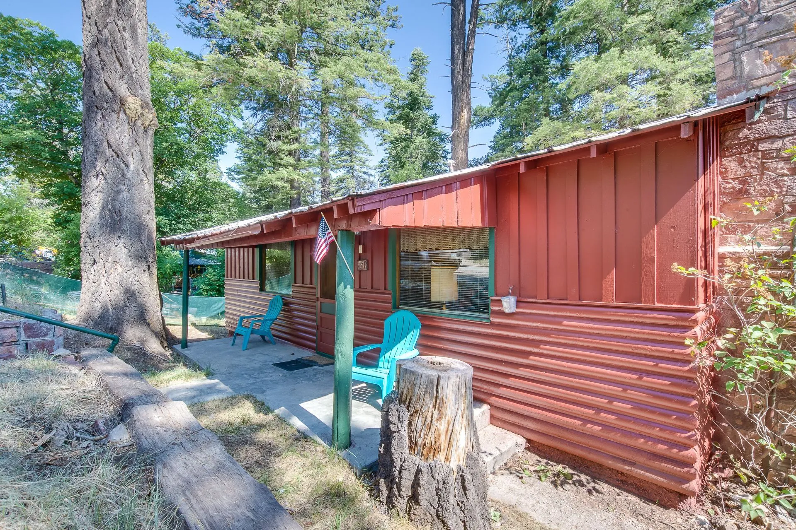
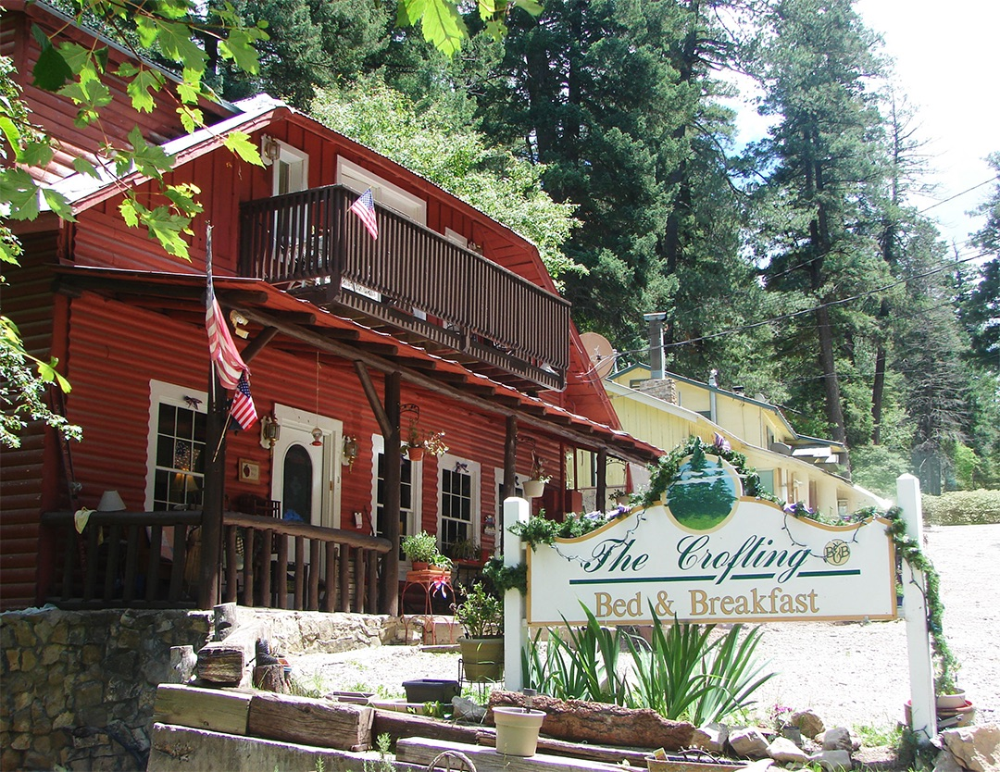

2026 Travel Guide
The Complete Guide to
Cloudcroft, New Mexico
Everything you need to plan the perfect mountain escape — at 8,676 feet in the Sacramento Mountains.
Best Things to Do in Cloudcroft
From world-class stargazing to mountain biking through pine forests, Cloudcroft punches well above its size. These are the experiences that make the trip worth making.

Stargaze at Sunspot Observatory
The Sacramento Peak Solar Observatory sits at 9,200 ft with remarkably dark skies. Tour the facilities, attend a night program, or simply pull off on the highway and look up — the Milky Way here is genuinely breathtaking.
Learn more →Ride the Mountain Bike Trails
The Sacramento Mountains offer some of the best high-altitude singletrack in the Southwest. The High Altitude Bike Classic each summer draws hundreds of riders. Trails range from gentle forest roads to technical descents.
Explore trails →Hike Lincoln National Forest
Dozens of maintained trails thread through aspen groves and spruce stands. The Osha Trail and Mexican Canyon Trestle loop are local favorites. Fall color season (mid-October) draws crowds from across the region.
View trails →Browse the Art Galleries
Burro Avenue, Cloudcroft's main street, is lined with galleries featuring local and regional artists. The work ranges from Western landscapes to contemporary craft. Most galleries are open weekends year-round.
See galleries →Play Pickleball at Zenith Park
Six free outdoor courts at 8,676 feet — possibly the highest pickleball venue in New Mexico. Open play runs Tuesday, Thursday, and Saturday mornings. Equipment can be borrowed. All skill levels welcome.
Court details →Drive the Mexican Canyon Trestle
This historic railroad trestle was built in 1899 and is one of the most photographed structures in southern New Mexico. The surrounding canyon is striking in every season, and the drive itself through the forest is worth it.
See the trestle →Insider tip: The best time to visit for uncrowded trails and moderate temps is May–June or September. Summer weekends in July–August fill up fast — book lodging weeks in advance.
Where to Stay in Cloudcroft
Cloudcroft has lodging for every style — from historic inns to mountain cabins to modern vacation rentals tucked in the trees. Book early for summer and fall color weekends.

The Lodge Resort & Spa
Cloudcroft's iconic Victorian-era lodge has been welcoming guests since 1899. The Rebecca's Restaurant inside is one of the region's most romantic dining rooms. Rooms, suites, and a spa on-site.

Grand Cloudcroft Hotel
A more contemporary option in the center of the village with easy walking access to shops and restaurants on Burro Avenue. Comfortable rooms with mountain views.
View hotel →
Cabins at Cloudcroft
Fully equipped private cabins ideal for families and groups. Each cabin has a fireplace, kitchen, and deck surrounded by tall pines. The most popular choice for weekend getaways.
View cabins →
Dusty Boots Motel & Cafe
15 uniquely themed rooms on James Canyon Highway — Roy Rogers, Harry Potter, Route 66, and more — with a scratch-kitchen cafe open daily, a hot tub, and Pedego e-bike rentals on-site. Pet-friendly. 0.7 miles from the village center.
View rooms →
The Summit Inn
A no-frills, well-kept inn at 9,000 feet on Chipmunk Avenue — 0.1 miles from downtown. Ten rooms named after New Mexico cities, each with a full kitchenette. Owned and operated by Timothy and Gail King, who are known for genuine local hospitality. Rated 8.3 on Booking.com.
View rooms →
The Crofting Bed & Breakfast
A century-old historic home on Swallow Place, two blocks from Burro Avenue. Eight individually decorated rooms — several with private balconies and mountain views — and a full cooked breakfast served every morning at 8:30 a.m. Rated 9.2 out of 10 on Expedia (678 reviews).
View rooms →Lincoln National Forest Campgrounds
Several established campgrounds within minutes of the village, including Pines and Silver, both managed by the USFS. Sites fill on summer weekends — reserve on Recreation.gov.
Camping guide →Booking tip: Fall color weekend (mid-to-late October) is the single most competitive booking weekend of the year. Reserve 6–8 weeks out. Summer July 4th weekend is a close second.
Where to Eat in Cloudcroft
Cloudcroft's dining scene is small but surprisingly good — BBQ joints, a craft brewery, a beloved diner, and a historic fine-dining room. Here's where to eat.
BBQ · Casual
Mad Jack's Mountaintop BBQ
Slow-smoked brisket, ribs, and pulled pork at 9,000 feet. The patio views are as good as the meat. A Cloudcroft institution — arrive early or expect a wait on weekends.

BBQ · Family
Brother-N-Law BBQ
A local favorite for hearty portions of smoked meats and classic sides. More casual than Mad Jack's and often less crowded — a solid backup plan that's earned its own loyal following.

Brewery · Pub
Cloudcroft Brewing Co.
New Mexico's highest craft brewery. The tap list changes seasonally with ales, IPAs, and lagers brewed on-site. The deck is the best place to watch a mountain sunset with a pint in hand.
Diner · Breakfast
Big Daddy's Diner
The go-to breakfast spot. Big portions, good coffee, friendly service. The green chile omelet and pancakes are the regulars' orders. Gets busy by 9am on weekends — show up early.

Bar · American
Western Bar & Café
Cold beer, bar food, and live music some weekends. The kind of place where locals end up after a long day on the trails. Down-to-earth, cash-friendly, and genuinely fun on a Saturday night.
Bar · Entertainment
High Rollin'
Bowling, burgers, and craft cocktails under one roof. A great rainy-day option or after-dinner stop. The lanes are well-maintained and the appetizers are better than you'd expect.
Note: Most Cloudcroft restaurants don't take reservations. Plan to arrive at off-peak times (before noon for lunch, before 6pm for dinner) on busy summer weekends. Hours can shift seasonally — call ahead in winter.
Seasonal Events
Cloudcroft's event calendar gives every season a reason to visit. Here are the highlights worth planning around.
May
Mayfair Festival
Cloudcroft's traditional spring celebration fills the village with live music, arts and crafts vendors, food, and community events. A beloved local tradition that marks the start of summer visitor season.
June
High Altitude Bike Classic
One of New Mexico's premier mountain biking events. Riders of all levels compete across five route options ranging from 10 to 55 miles through Lincoln National Forest. Registration typically opens in spring.
July
July Jamboree & 4th of July
The Fourth of July weekend is Cloudcroft's busiest. Fireworks, live music, and a full slate of family activities draw visitors from across the region. Book lodging months in advance for this weekend.
August
Lumberjack Day
A celebration of Cloudcroft's logging heritage featuring axe-throwing competitions, log-rolling, chainsaw carving, and historical demonstrations. Rowdy, fun, and distinctly Cloudcroft.
October
Aspenfest & Oktoberfest
Aspenfest celebrates peak fall color season with live music and vendor markets. Oktoberfest runs the same general period with German-style beers and food. Together they make October the most festive month in Cloudcroft.
December
Christmas in the Mountains
Holiday lights, tree lighting ceremonies, and winter market vendors transform the village. Snow is likely but not guaranteed — when it comes, it makes the already-charming main street feel like a postcard.
Event tip: Event dates shift year to year. Check the events calendar closer to your visit for confirmed 2026 dates and new additions.
Outdoor Activities
The Sacramento Mountains offer year-round outdoor recreation. Whether you're here in ski season or peak summer, there's always something to do outside.
Hiking
40+ miles of trails in Lincoln National Forest, from easy nature walks to full-day ridge hikes.
 Best: June – September
Best: June – SeptemberSkiing & Snow
Ski Cloudcroft offers New Mexico's southernmost ski area — small but scenic, with a genuine mountain atmosphere.
Fishing
Several stocked streams and ponds within driving distance. A New Mexico fishing license is required for anyone 12 and over.
Stargazing
One of southern New Mexico's best dark-sky sites. The Sacramento Mountains have minimal light pollution and consistently clear nights at elevation.
Camping
USFS campgrounds within 10 minutes of the village. Primitive and developed sites available — reserve well ahead for summer weekends.
Altitude reminder: Cloudcroft sits at 8,676 feet. If you're coming from sea level or from El Paso (4,000 ft), plan a slower first day. Headaches and shortness of breath are common — drink extra water and avoid overexertion on arrival.
Weekend Itinerary
Two days in Cloudcroft is the sweet spot — enough time to hike, eat well, stargaze, and decompress without rushing. Here's how to spend them.
Arrive, Explore, Eat Well
Breakfast at Big Daddy's Diner
Start with a full breakfast before anything else. Order the green chile omelet. Get there before 9am on busy weekends or expect a short wait.
Morning hike — Osha Trail or Mexican Canyon Trestle
Both loops are under 5 miles and deliver big scenery for modest effort. The Trestle loop includes views of the historic 1899 railroad bridge over Mexican Canyon.
Lunch at Mad Jack's or Cloudcroft Brewing
Post-hike BBQ at Mad Jack's, or settle in at the brewery for a pint and pub food on the deck. Either way, you've earned it.
Browse Burro Avenue galleries & shops
Walk the main street, visit the art galleries, pop into Instant Karma and the other shops. Good for picking up local art, souvenirs, and conversation.
Check in, freshen up, sunset
If you haven't checked in yet, do so now. Watch the sunset from your cabin deck or the brewery patio — the light through the pines is reliably excellent.
Dinner at Western Bar or High Rollin'
Keep it casual tonight. Western Bar for cold beer and comfort food, or High Rollin' for bowling and appetizers. Save the more ambitious dinner for tomorrow.
Stargazing
Drive up toward Sunspot or find a pullout on the highway south of town. Bring a blanket and let your eyes adjust for 15 minutes. The Milky Way is visible most clear nights. No equipment needed.
Pickleball, Observatory, Slow Drive Home
Morning coffee, slow start
Grab coffee and pastries from a local café. Sit on the porch. This is your vacation — don't rush the second morning.
Pickleball at Zenith Park (if Saturday or Tuesday)
Six free courts open 24/7, with organized open play on Tuesday, Thursday, and Saturday mornings. All skill levels welcome — the community here is notably welcoming to visitors.
Drive to Sunspot Solar Observatory
The 16-mile drive south on Hwy 6563 through Lincoln National Forest is one of the most beautiful drives in southern New Mexico. The observatory has self-guided tours and a visitor center.
Lunch before heading out
Return to the village for a final meal. Brother-N-Law BBQ tends to be less crowded than Mad Jack's on Sunday afternoons and is an excellent sendoff lunch.
Head home via Alamogordo
The descent from Cloudcroft to Alamogordo on Hwy 82 drops 4,000 feet in 15 miles — one of the more dramatic highway descents in the state. Stop at White Sands National Park if you have time.
Extending your stay? A third day is best spent on a longer trail (Rim Trail, Sacramento Rim), a morning of mountain biking, or a drive to Alamogordo and White Sands National Park before the return trip.
Ready to Plan Your Trip?
Cloudcroft is a two-hour drive from El Paso and less than four from Albuquerque. The hardest part is choosing a weekend.